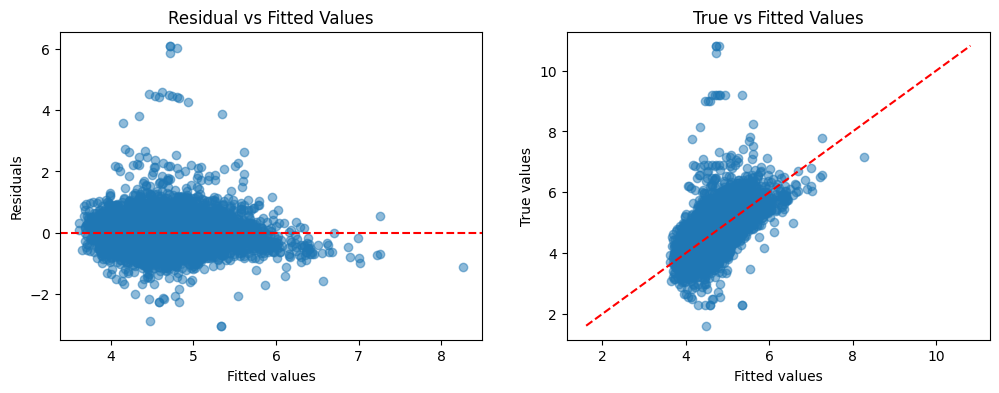
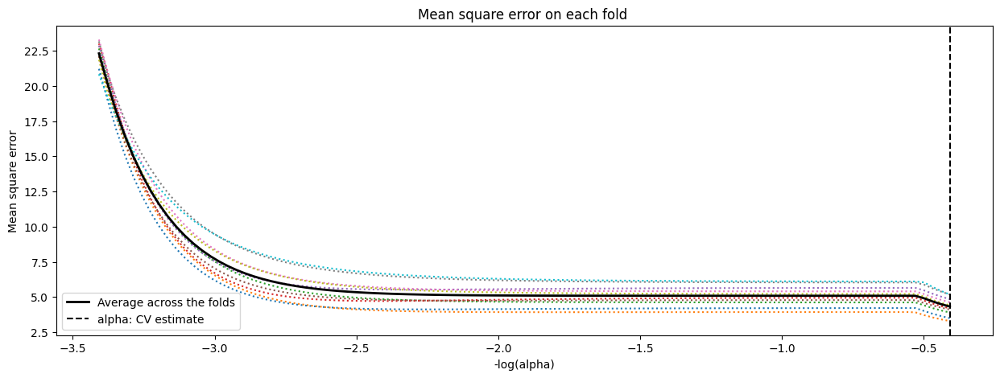

#Aufgabe 2_1#Wir haben die Tabelle aus Aufgabe 1 übernommen.#Zunächst wandeln wir zur Sicherheit alle 0 Werte in NA um, daraufhin droppen wir diese Zeilen.import pandas as pdimport numpy as nplistings_2 = pd.read_csv("listings_1_13.csv", index_col="Unnamed: 0")listings_2["price"] = listings_2["price"].replace(0, pd.NA)listings_2.dropna(subset=["price"], inplace=True)print(listings_2.columns)listings_2_1 = listings_2[["price", "accommodates","amenities_length","latitude","longitude", "bedrooms", "host_is_superhost", "Shared_bath_status", "instant_bookable", "bathrooms_number"]]#Drops NAlistings_2_1.dropna(inplace=True)listings_2_1["price"] = listings_2_1["price"].apply(np.log)listings_2_1.rename(columns={"price":"log_price"}, inplace=True)#We have checked that there are no NA values. No further cleaning is necessary.#print(len(listings_2["price"]))#Ziel: Price#Chosen Predictors: "region_median_price","latitude","longitude", "accommodates", "bedrooms", "host_is_superhost", "Shared_bath_status", instant_bookable", "bathrooms_number"#listings_2_1.head()#print(listings_2_1.isna().sum())#Here we calculated the samplesize.print(len(listings_2_1))
Based upon the results of the previous task, we were able to see some of the chosen correlating parameters. We further added some of the parameters that were not included in the previous task, such as the number of bedrooms and bathrooms, because we believe they have a significant impact on the price of the house.
#Wir haben die Variablen latitude und longitude in eine Distanzvariable zum Stadtzentrum transformiert. Der Grund dafür ist, dass der Einfluss der Lage auf den Preis plausibel nicht linear entlang einer einzelnen geografischen Achse verläuft. Stattdessen ist zu erwarten, dass sich der Preiseffekt radial vom Stadtzentrum aus verändert, sodass vor allem die Entfernung zum Zentrum – und nicht die absolute Position in Nord-Süd- oder Ost-West-Richtung – für die Preisbildung relevant ist.#Add distance from dataset geographic center using Euclidean distance.lon_center = listings_2_1["longitude"].mean()lat_center = listings_2_1["latitude"].mean()listings_2_1["distance_center"] = np.sqrt( (listings_2_1["latitude"] - lat_center) **2+ (listings_2_1["longitude"] - lon_center) **2)listings_2_1 = listings_2_1.drop(columns=["latitude", "longitude"])
Notes: [1] Standard Errors assume that the covariance matrix of the errors is correctly specified. [2] The condition number is large, 1.26e+04. This might indicate that there are strong multicollinearity or other numerical problems.
#Aufgabe_2_3import matplotlib.pyplot as pltfitted = olssim.fittedvaluesresiduals = olssim.residfig,ax = plt.subplots(1, 2,figsize=(12, 4))ax[0].scatter(fitted, residuals, alpha=0.5)ax[0].axhline(0, color='red', linestyle='--')ax[0].set_xlabel("Fitted values")ax[0].set_ylabel("Residuals")ax[0].set_title("Residual vs Fitted Values")ax[1].scatter(fitted, outcome, alpha=0.5)ax[1].plot([outcome.min(), outcome.max()],[outcome.min(), outcome.max()], 'r--')ax[1].set_xlabel("Fitted values")ax[1].set_ylabel("True values")ax[1].set_title("True vs Fitted Values")plt.show()print(len(outcome))

9203
The residual-vs-fitted-values plot shows that the residuals are roughly centered around zero without a clear systematic pattern, suggesting that the linear specification of the model is reasonable. However, the spread of residuals appears to decrease slightly as the fitted values increase, which may indicate mild heteroskedasticity. A few outliers are also visible. The residuals are centered around zero, indicating that the model does not systematically over- or underpredict the outcome.
The l_2-norm ||β||_2 is the smallest für the Ridge regression model, which suggests that it has the most regularization effect among the three models. This is expected, as Ridge regression adds a penalty term to the loss function that shrinks the coefficients towards zero, thus reducing their magnitude. The Lasso regression model has a larger l_2-norm than Ridge, but still smaller than the OLS model, indicating that it also applies some regularization but allows for some coefficients to be exactly zero. The OLS model has the largest l_2-norm, as it does not apply any regularization and allows all coefficients to take on their full values.
#Aufgabe_2_5lasso_reg = sklearn.linear_model.LassoCV(cv=10,fit_intercept =False)model = lasso_reg.fit(regressor,outcome)# Koeffizientenprint("Lasso coefficients:")print(model.coef_)# Display resultsm_log_alphas =-np.log10(model.alphas_)plt.figure(1,figsize=(15,5))plt.plot(m_log_alphas, model.mse_path_, ':')plt.plot(m_log_alphas, model.mse_path_.mean(axis=-1), 'k', label='Average across the folds', linewidth=2)plt.axvline(-np.log10(model.alpha_), linestyle='--', color='k', label='alpha: CV estimate')plt.legend()plt.xlabel('-log(alpha)')plt.ylabel('Mean square error')plt.title('Mean square error on each fold ')# '(train time: %.2fs)' )#% t_lasso_cv)plt.axis('tight')plt.show()
[0. 0.13182405 0.00608944 0. 0. 0.
0. 0. 0. ]

# Aufgabe_2_5lasso_reg = sklearn.linear_model.LassoCV(cv=10, fit_intercept=False, eps=1e-6)model = lasso_reg.fit(regressor, outcome)# Koeffizientenprint("Lasso coefficients:")print(model.coef_)# Alpha selected via cross-validationprint("Alpha selected via cross-validation:", model.alpha_)# L2-Norm der Koeffizientenprint("L2 norm of coefficients:", np.linalg.norm(model.coef_, 2))# Display resultsm_log_alphas =-np.log10(model.alphas_)plt.figure(1, figsize=(15,5))plt.plot(m_log_alphas, model.mse_path_, ':')plt.plot( m_log_alphas, model.mse_path_.mean(axis=-1),'k', label='Average across the folds', linewidth=2)plt.axvline(-np.log10(model.alpha_), linestyle='--', color='k', label='alpha: CV estimate')plt.legend()plt.xlabel('-log(alpha)')plt.ylabel('Mean square error')plt.title('Mean square error on each fold')plt.axis('tight')plt.show()